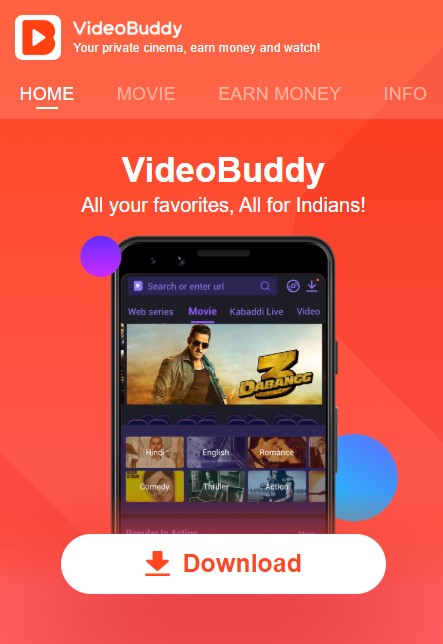
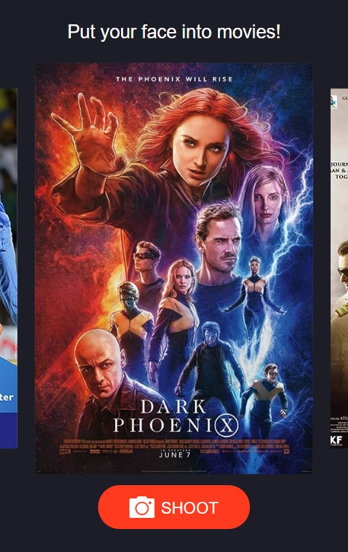

-
- Basic info. 基本信息
- 个人信息: 刘梦伟 / 男
- 毕业院校: 2012 ~ 2016 深圳大学本科 / 电子科学与技术
- 工作年限: 四年
- 年龄: 26
- 博客: http://lmengwei.com
- GitHub: www.github.com/liu-mengwei
-
- Experience. 项目与工作经验
迅雷网络技术有限公司（2018.8 - ）
-
VideoBuddy
迅雷海外业务中心明星产品，日活达到百万+
迅雷海外市场的一款影音娱乐app
技术：安卓原生客户端+webiew嵌入h5页面(hybrid)
前端技术：vue + vue-router + nodejs(koa) + webpack + eslint + 自研项目脚手架工具
我负责其中的一些web页面，比如v币首页（v币是产品的虚拟货币）、转盘摇奖页、电影电视剧拉新等活动 页
我比较创新的贡献是：
1.v币页面打包时静态文件全部上传s3cdn(webpack s3plugin) 即发布工具
2.分析打包后的相关文件，发现引入了不知名的库导致js体积很大,后逐步排查问题使得js体积减小
3.页面引入了vue.cdn.js，不同页面间利用了相同的缓存(webpack公共模块切分)
4.利用webpack devServer before钩子，实现了动态入口编译，使得构建速度得到提升
5.实现了项目的编译、发布检查命令脚本。(githooks), 使得团队较少出现代码合并错误的问题
6.基于海外业务实现了一个用于初始化的脚手架工具，使得团队项目开发效率得到提升
-
海外产品管理后台
主要是海外产品的运营后台
技术：Element UI + vue + axios + docker + webpack
我比较创新的贡献是：
针对繁琐的后台开发工作：我实现了一套自动化生成管理后台代码的工具 工具的主要用途是：根据简单 的json配置，即可生成对应的页面，尽可能的帮你省去初始化的繁琐工作，你只需要编写一部分核心逻辑 （比如接口数据的格式化），再检查一下即可上线页面。 小伙伴平时也会丢给我一些后台需求让我进行 测试完善，目前结果看来，使用效果不错。并在项目组作了分享从而推广
-
电影海报换脸H5
由我主导负责开发的一个有意思的拉新活动，用户可以上传自己的头像来替换电影海报中的人物头像， 用户可以控制头像的大小，方向等。促进了日活增长
技术：vue + vue-router + canvas + 部分原生jsAPI
TCL多媒体有限公司（2016.7 - 2018.8）
-
使用 AngularJS 框架 和 Sass 预处理器 来实现前端组件及数据交互，使用 webpack 构建 业务：询报价，招投标，供应商的注册、绩效、认证等。
比如询报价模块：采购部门发布采购申请，通知供应商登陆系统进行报价，然后走议价，定价等流程。 比如认证模块：会经过采购工程师，采购经理，财务，vqa等不同角色的审核。
业绩：此系统提升了集团内采购部门的工作效率，使流程得到简化，使招投标等流程公开，透明。
技术：前端使用 AngularJS 1.x + Fis3 + Sass + ES6，使用SiteMesh来管理菜单和权限。使用TFS作为 版本管理工具，Nginx作请求的转发，我主要负责了其中部分前端页面的开发及一些公共组件的抽象工 作
-
多媒体经营管理系统
业务：公司经营情况的图表展示。各地区销量与预期的对比，各部门支出，各物料各供应商的采购比 例，各物料采购金额的统计与走势等
技术：Jquery + Echarts，我主要负责其中部分图表的开发
-
供应链管理系统
业务：海外模块的主数据录入（业务员，区域配置等），实际销售录入，销售达成率分析，毛利率输 出，季度销量中期目标等
技术：Java + Struts2 + Spring + iBatis，数据库采用Oracle，因为是公司维护的比较旧的系统，采用 了 后端模板语言FreeMarker直出HTML，我主要负责部分业务模块的后台及前台的代码编写工作，以及部 分报表的开发
个人项目
-
MengMusic 音乐播放器
炒鸡好看的 HTML5 音乐播放器，支持歌词、播放列表、播放模式（循环播放、随机播放等）
技术：vue 全家桶（vue + vuex + vue-router）+ axios + es6/7
开源 better-scroll 作为滚动解决方案
scss 作为css预处理器
-
高仿外卖app
高仿饿了么外卖webpapp，纯前端展示，后端数据为mock。实现了一些好玩的效果，比如小球的滚落 动画。采用webpack构建，主要用到 vue + vue-router + stylus + eslint + css3动画
-
爆炸糖果(小游戏)
一款用cocos2d-js写的小游戏，点击某个糖果，与其相连的糖果就会消除并得到分数，其中包含了一些算法，比如深度优先搜索(DFS)
-
汉克狗(css3)
纯css画的一只萌萌的小狗，用到了许多css3特性， 比如transition、animation、transform、box-shadow、渐变的背景linear-gradient
-
- Skill. 技能清单
前端
-
JavaScript
比较扎实的Javascript 语言基础
比较扎实的vue.js使用经验，较深入的读过vue源码
熟悉webpack打包构建工具
熟悉前端的常用设计模式，力求将代码写得简洁漂亮，逻辑层次分明
了解前端工程化，模块化，组件化，函数式等编程思想
熟悉es6/7 语法
-
HTML / CSS
有pc端和移动端的布局经验
比较扎实的css布局经验，熟悉css3
熟悉sass less stylus等常见css预处理的使用
熟悉响应式，熟悉 BootStrap 的使用
理解html的语义化，可访问性
-
计算机基础
比较扎实的计算机网络基础
比较扎实的数据结构和算法基础
熟悉HTTP协议
了解浏览器的工作原理（事件循环，单线程，渲染流程）
了解前端性能优化的常用方法
了解前端安全
熟练使用git, 对团队协作开发有一定经验
后端
-
Node.js
了解 Node.js 的开发（单线程，异步，事件驱动，commonjs模块化）
-
J2EE
比较熟悉 Java 语言， 了解 Spring Struts2 iBatis框架的使用
-
数据库
了解 Sql 语言，使用 Oracle 做过企业级开发，使用 FineReport 做过公司报表开发
-
Linux
了解 Linux，可以在 Linux 环境下发布项目